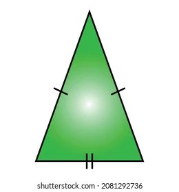

Triangulo isosceles
Un triángulo isósceles es aquel que tiene dos lados de la misma longitud.
Estos lados iguales se llaman "patas" y el tercer lado se conoce como la "base".
Los ángulos opuestos a los lados iguales (ángulos de la base) también son iguales.
Características principales:
- Dos lados iguales: Esta es la definición fundamental de un triángulo isósceles.
- Dos ángulos iguales: Los ángulos que forman los lados iguales con la base son iguales entre sí.
- Base: El lado diferente a los dos lados iguales.
- Ángulo del vértice: El ángulo formado por los dos lados iguales.
